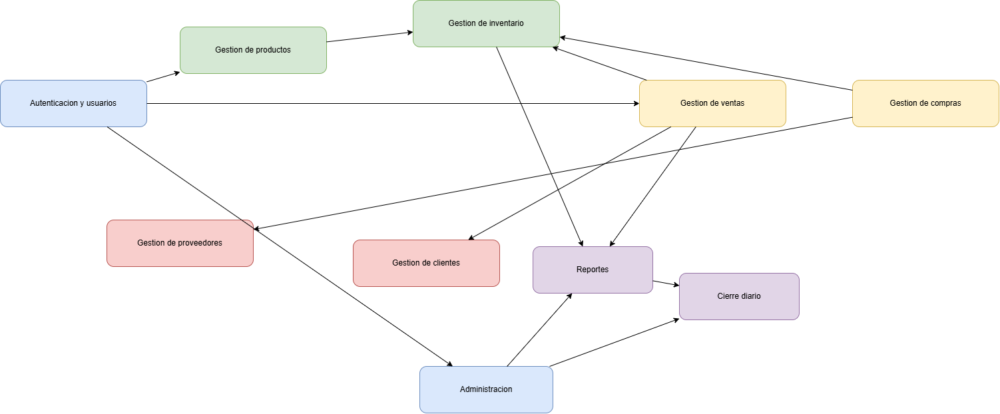

Mapa general de módulos y relaciones.
Diseño modular
La arquitectura se concibe como una estructura modular que separa autenticación, productos, inventario, compras, ventas, reportes y cierre diario, preservando integridad y escalabilidad moderada.
Mapa general de módulos y relaciones.

Componentes lógicos y responsabilidades funcionales.
Presentación, lógica de negocio, persistencia y control transversal de seguridad y trazabilidad.
Productos, inventario, compras, ventas, reportes, administración y autenticación.
Permite evolución incremental sin rehacer por completo la solución futura.